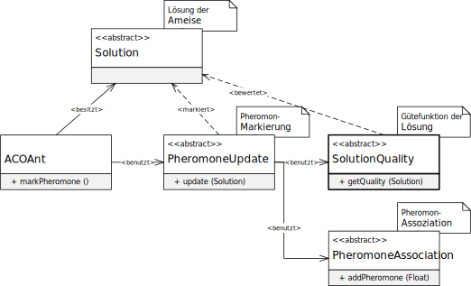

程序包 eu.andredick.aco.solutionquality
package eu.andredick.aco.solutionquality
解决方案的质量功能 （ACO元启发式的组成部分，第3.3.12章，第46页）

-
类类说明AbstractSolutionQuality<S extends AbstractSolution>SCP解决方案的简单质量功能
第 3.3.12 章，第 46 页，解的质量函数
简单质量函数与目标函数值的倒数成正比.
为了增加值范围，将目标函数值的倒数乘以子集数.
质量功能由信息素标记组件 (AbstractPheromoneUpdate) 调用。